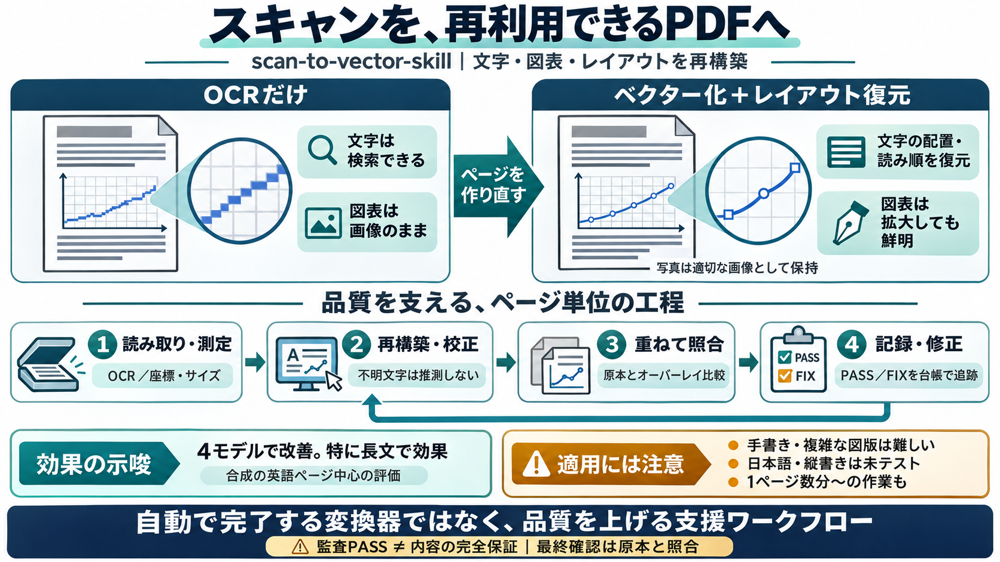

GitHub - nyosegawa/ocr-comparison: OCR比較 · GitHub
| Rank | モデル | Accuracy | Parse | Schema | Avg Time | --- --- --- | | 1 | claude-4.6-opus | 0.9931 | 100% | 100% | 10…

スキャン書類を「検索可能」かつ「拡大しても崩れない」見た目で、再構築するエージェント用スキル。OCR（文字認識）だけで終わらず、図表をベクター化（vector）してページを作り直す発想が中心です。
OCRをかけても、多くの場合「画像の上に不可視の文字が載る」だけで、図表や線画は基本的に画像のままになります。結果として、拡大すると劣化しやすく、再利用（印刷・編集）にも不利です。
このスキルは、ページを“レイアウトを保って再構築”する方向です。テキストだけでなく、図・グラフをベクター（線・形のデータ）として描き直し、写真や彫刻は適切な形で保持します。
エージェント作業では位置ズレや見落としが致命的になります。本スキルは、再構築結果をスキャンに重ね、ページ単位で PASS/FIX を出しつつ、台帳（レジャー）として未達を追跡します。
テキスト認識（Tesseract）を行い、ダブル解像度で読み取りを2回し、その結果を測定座標・サイズ・太さ・読み順として配置します。読めない文字は推測せず、校正シートに集め、 fixes.json の方針で修正します。
OCRmyPDFのようなOCR層は、画像の上に不可視テキストを載せるのが中心です。一方 scan-to-vector は、図やチャートの線・形をベクターとして描き直し、ページそのものを作り直す方向を取ります。
ベンチマークでは、4モデルに対して「スキル適用でスコアが上がった」結果が示されます。特に長文では全モデルで改善が観測され、95%信頼区間がプラス側にあるケースが強調されています。
ベンチマークは合成データ（特に英語ページ）が中心で、手書きや緻密な彫刻などは難しい可能性があります。有効性は示唆されますが、全種類の原稿へ一般化できるとは明記されていません。
本スキルはワンクリック変換ではなく、工程（草案→校正→照合→修正）でエージェントの失敗パターンを補うツールとして位置付けられています。最終的な正しさは監査だけで保証せず、出典（スキャン）との確認が必要です。
スキャンから再構築するため、1ページあたり数分〜の作業になり得ます。OCR層だけの手段に比べてコストと時間がかかるため、「図表の再ベクター化が必要」など目的を絞って使うのが現実的です。
いくつかのFAQが、期待のズレを防ぎます。監査がPASSでも内容の正しさは自動保証できない、手書きは難しい可能性が高い、多言語（日本語・縦書き）は未テスト、という注意が明記されています。
scan-to-vector-skill は、OCRで検索可能にするだけでなく、図表や線画までベクターとして復元し、拡大しても崩れにくい“再タイポセットPDF”を狙います。成功は工程設計とページごとの照合に依存し、最終的には出典（スキャン）レビューが前提です。
| Rank | モデル | Accuracy | Parse | Schema | Avg Time | --- --- --- | | 1 | claude-4.6-opus | 0.9931 | 100% | 100% | 10…
An imported registry flag does not mean CodeSOTA reproduced the run. Treat externally reported and unverified observatio…
# Book to Skill Github: Turn Any PDF Into Local AI Skill (No Token Limits!) ## Channel: Ray Codes 8.23K subscribers 124 …
跳至導覽 跳過主要內容 跳至右欄 [...] PR Newswire Asia # 雲知聲Unisound U1-OCR大模型發布！首個工業級文檔智能基礎大模型，開啟OCR 3.0時代 PR Newswire Asia 6 分鐘閱…
M. Jaderberg, K. Simonyan, A. Vedaldi, and A. Zisserman. Synthetic data and artificial neural networks for natural scene…